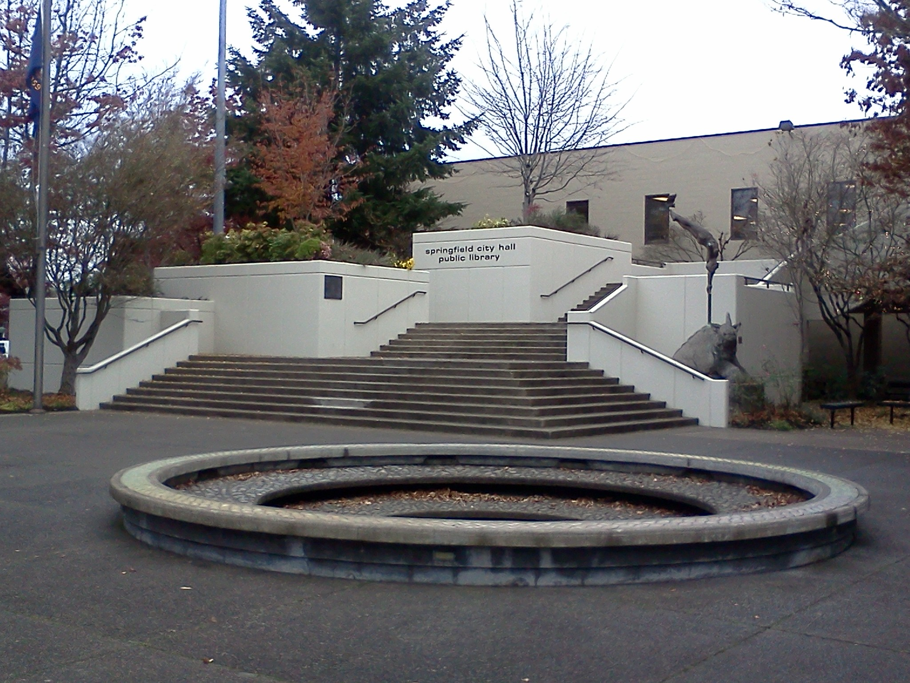
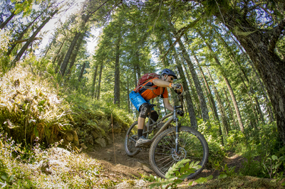

Current Temperature:
°F
Current Wind Speed:
mph
Today's Forecast:
Ten-Day Forecast
| Day 1 | Day 2 | Day 3 | Day 4 | Day 5 | Day 6 | Day 7 | Day 8 | Day 9 | Day 10 |
|---|---|---|---|---|---|---|---|---|---|
| °F | °F | °F | °F | °F | °F | °F | °F | °F | °F |
Ridgeline & Baldy, Eugene, OR

Just fifteen minutes away from Springfield, you can find the Ridgeline Trail which provides a not overly technical, but steep hill for numerous riders.
First mile has 300+ feet of elevation gain, the rest is more moderate. It's a good local trail for rides after work, also holds up well to weather/rain.
Martin St trailhead to Fox Hollow TH is about 1 mile with 300+ feet of elevation gain, then up to Dillard Rd TH, head down the road a ways to Baldy, and then Up. The. Hill. Looking up Baldy, the left track is steep death, right track is moderately steep. I recommend going right, then coming down the fun way.
Source: MTB PROJECT